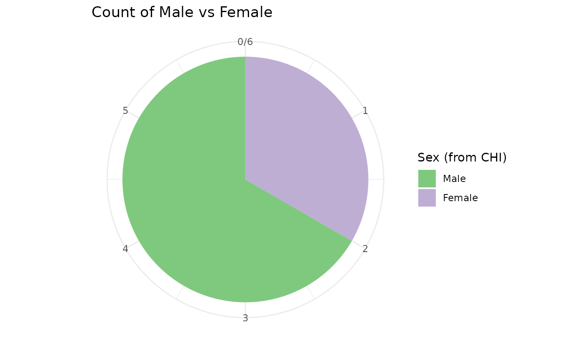

Checking and correcting CHI numbers
The first thing you should do when working with CHI numbers of
unknown quality is to check their validity. phsmethods provides a
function to easily do this: chi_check() - This function
expects a character vector (1 or more), it will then return a value for
each CHI number letting you know if it’s valid, and if it isn’t what the
issue is.
chi_numbers <- c(
"0211165794",
"9999999999",
"402070763",
"00402070763",
"0101010000",
"Missing CHI",
NA,
""
)
library(phsmethods)
chi_check(chi_numbers)
#> [1] "Valid CHI" "Invalid date"
#> [3] "Too few characters" "Too many characters"
#> [5] "Invalid checksum" "Invalid character(s) present"
#> [7] "Missing (NA)" "Missing (Blank)"Cleaning up bad CHI numbers
Usually, we will have the CHI as a variable in some data.
library(dplyr)
data <- tibble(chi = c(
"0211165794",
"9999999999",
"402070763",
"00402070763",
"0101010000",
"Missing CHI",
NA,
""
))It looks like one of the CHI numbers ‘402070763’ might have just lost
a leading zero, this is a common occurrence if the data has passed
through Excel at some point. We can fix this specific issue with
chi_pad().
fixed_data <- data %>%
mutate(chi = chi_pad(chi))
checked_data <- fixed_data %>%
mutate(valid_chi = chi_check(chi))
checked_data
#> # A tibble: 8 × 2
#> chi valid_chi
#> <chr> <chr>
#> 1 "0211165794" Valid CHI
#> 2 "9999999999" Invalid date
#> 3 "0402070763" Valid CHI
#> 4 "00402070763" Too many characters
#> 5 "0101010000" Invalid checksum
#> 6 "Missing CHI" Invalid character(s) present
#> 7 NA Missing (NA)
#> 8 "" Missing (Blank)On a larger dataset, it might be useful to get a count of the issues rather than seeing them per CHI.
fixed_data %>%
count(valid_chi = chi_check(chi), sort = TRUE)
#> # A tibble: 7 × 2
#> valid_chi n
#> <chr> <int>
#> 1 Valid CHI 2
#> 2 Invalid character(s) present 1
#> 3 Invalid checksum 1
#> 4 Invalid date 1
#> 5 Missing (Blank) 1
#> 6 Missing (NA) 1
#> 7 Too many characters 1Now we have this knowledge we have a few options. Which option we take will depend on the type and purpose of the analysis as well as how many CHI numbers have issues.
- Go back to the data source/provider and try to fix the erroneous CHI numbers.
- Set them as NA so we keep the rest of the data.
- Filter the data with invalid CHIs out completely.
fixed_data %>%
mutate(chi = if_else(chi_check(chi) != "Valid CHI", NA_character_, chi))
#> # A tibble: 8 × 1
#> chi
#> <chr>
#> 1 0211165794
#> 2 NA
#> 3 0402070763
#> 4 NA
#> 5 NA
#> 6 NA
#> 7 NA
#> 8 NA
fixed_data %>%
filter(chi_check(chi) == "Valid CHI")
#> # A tibble: 2 × 1
#> chi
#> <chr>
#> 1 0211165794
#> 2 0402070763Inferring data from a CHI number
In an ideal world, we would always have supplementary data such as Date of Birth, Age and Sex alongside the CHI number, however, we often work with data where we only have the CHI number and the other demographic variables are either completely missing or incomplete.
Once we have checked and (if necessary) padded the CHI numbers, we can then try and extract some information from them.
The structure of a CHI number
As explained in this Wikipedia
article a CHI number is constructed as follows: * The first 6 digits
are the patient’s Date of Birth in the format DDMMYY. *
Digits 7 and 8 are random. * The 9th number indicates the
patient’s sex - odd for male, even for female. * The final,
10th, digit is a (Modulus-11) ‘check digit’ - This helps
guard against transcription errors, for example, if someone makes a typo
it is very unlikely that the check digit will still be valid.
Extracting sex from CHI
With sex_from_chi() we can extract the infer and extract
the patient’s sex. By default, the function will first check the CHI for
validity and will return NA if a CHI is invalid.
If you have already checked the CHI in a previous step it can be
useful to use chi_check = FALSE as this will be faster.
data <- tibble(
chi = c("0101011237", "0211165794", "0402070763", "0101336489", "1904851231", "2902960018")
)
# Confirm all of the CHIs are valid
count(data, chi_check(chi))
#> # A tibble: 1 × 2
#> `chi_check(chi)` n
#> <chr> <int>
#> 1 Valid CHI 6
data_sex <- data %>%
mutate(sex = sex_from_chi(chi, chi_check = FALSE))
data_sex
#> # A tibble: 6 × 2
#> chi sex
#> <chr> <int>
#> 1 0101011237 1
#> 2 0211165794 1
#> 3 0402070763 2
#> 4 0101336489 2
#> 5 1904851231 1
#> 6 2902960018 1By default sex will be returned as an integer with ‘1’ representing ‘Male’ and ‘2’ representing ‘Female’, this is consistent with the coding of sex in other PHS datasets.
We can have sex returned as a factor using
as_factor = TRUE, which by default will have levels of ‘1’
and ‘2’ and labels of ‘Male’ and ‘Female’ which can be useful,
particularly when visualising the data.
data_sex <- data_sex %>%
mutate(sex_factor = sex_from_chi(chi, as_factor = TRUE))
data_sex
#> # A tibble: 6 × 3
#> chi sex sex_factor
#> <chr> <int> <fct>
#> 1 0101011237 1 Male
#> 2 0211165794 1 Male
#> 3 0402070763 2 Female
#> 4 0101336489 2 Female
#> 5 1904851231 1 Male
#> 6 2902960018 1 Male
library(ggplot2)
data_sex %>%
ggplot(aes(y = "", fill = sex_factor)) +
geom_bar() +
coord_polar() +
labs(title = "Count of Male vs Female", x = "", y = "") +
scale_fill_brewer("Sex (from CHI)", type = "qual") +
theme_minimal()
Extracting Date of Birth from CHI
It is usually not possible to definitively infer a patient’s Date of Birth from the CHI number, this is because the CHI only contains 2 digits for the year. Looking at the first 6 digits of a CHI number ‘010120’ could be ‘1 January 1920’ or ‘1 January 2020’. However, with some extra context, we can usually eliminate one of the possibilities, for example in 2023 we know that any CHI numbers of the form ‘DDMM24’ etc. must mean 1924 since it can’t be 2024.
The function dob_from_chi() will try to extract the Date
of Birth and will return NA if the date is ambiguous.
data_dob <- data %>%
mutate(dob = dob_from_chi(chi))
#> ! 3 CHI numbers produced ambiguous dates and will be given "NA" for their Dates
#> of Birth.
#> ✔ Try different values for `min_date` and/or `max_date`.
data_dob
#> # A tibble: 6 × 2
#> chi dob
#> <chr> <date>
#> 1 0101011237 NA
#> 2 0211165794 NA
#> 3 0402070763 NA
#> 4 0101336489 1933-01-01
#> 5 1904851231 1985-04-19
#> 6 2902960018 1996-02-29We will need to provide some more context to be able to work out the
still missing dates. Often we will be working with historical data, for
instance, if we know the data is from 2015 we know the patients must
have been born earlier than that. We can use the min_date
and max_date arguments to provide this context.
-
min_datewill usually be some information from the data, it is the latest possible date that the CHI could have been born. -
max_datewill default to today’s date, it will usually be some common sense date about the latest date you’d expect. For instance, if working with childhood vaccine data you could useSys.Date() - lubridate::years(16), it to imply you don’t expect anyone older than 16 as of today’s date.
# Expect no one born after 2015-12-31
data %>%
mutate(dob = dob_from_chi(chi, max_date = as.Date("2015-12-31")))
#> ! 2 CHI numbers produced ambiguous dates and will be given "NA" for their Dates
#> of Birth.
#> ✔ Try different values for `min_date` and/or `max_date`.
#> # A tibble: 6 × 2
#> chi dob
#> <chr> <date>
#> 1 0101011237 NA
#> 2 0211165794 1916-11-02
#> 3 0402070763 NA
#> 4 0101336489 1933-01-01
#> 5 1904851231 1985-04-19
#> 6 2902960018 1996-02-29
# Expect no one born before 1999-12-31 i.e. 16 years before our data started.
data %>%
mutate(dob = dob_from_chi(
chi,
max_date = as.Date("2015-12-31"),
min_date = as.Date("2015-12-31") - lubridate::years(16)
))
#> ! 4 CHI numbers produced ambiguous dates and will be given "NA" for their Dates
#> of Birth.
#> ✔ Try different values for `min_date` and/or `max_date`.
#> # A tibble: 6 × 2
#> chi dob
#> <chr> <date>
#> 1 0101011237 2001-01-01
#> 2 0211165794 NA
#> 3 0402070763 2007-02-04
#> 4 0101336489 NA
#> 5 1904851231 NA
#> 6 2902960018 NAUsually, we will have event dates e.g. an admission date alongside the data and this can be used instead of, or in conjunction with a fixed date.
data <- data %>%
mutate(event_date = as.Date(c(
"2015-01-01",
"2014-01-01",
"2013-01-01",
"2012-01-01",
"2011-01-01",
"2010-01-01"
)))
# Using the event date as the maximum date
data %>%
mutate(dob = dob_from_chi(chi, max_date = event_date))
#> ! 2 CHI numbers produced ambiguous dates and will be given "NA" for their Dates
#> of Birth.
#> ✔ Try different values for `min_date` and/or `max_date`.
#> # A tibble: 6 × 3
#> chi event_date dob
#> <chr> <date> <date>
#> 1 0101011237 2015-01-01 NA
#> 2 0211165794 2014-01-01 1916-11-02
#> 3 0402070763 2013-01-01 NA
#> 4 0101336489 2012-01-01 1933-01-01
#> 5 1904851231 2011-01-01 1985-04-19
#> 6 2902960018 2010-01-01 1996-02-29
# Setting a 'fixed' minimum date as well as using the event date
data_dob <- data %>%
mutate(dob = dob_from_chi(
chi,
max_date = event_date,
min_date = as.Date("1915-01-01")
))
data_dob
#> # A tibble: 6 × 3
#> chi event_date dob
#> <chr> <date> <date>
#> 1 0101011237 2015-01-01 2001-01-01
#> 2 0211165794 2014-01-01 1916-11-02
#> 3 0402070763 2013-01-01 2007-02-04
#> 4 0101336489 2012-01-01 1933-01-01
#> 5 1904851231 2011-01-01 1985-04-19
#> 6 2902960018 2010-01-01 1996-02-29Extracting age from CHI
The function age_from_chi() provides a simpler interface
for just extracting a patient’s age from the CHI number. In the
background, it uses dob_from_chi() but allows you to
specify min_age and max_age, which are usually
conceptually simpler than trying to work out dates. We do lose some
amount of fine control here though, so it will sometimes be necessary to
use dob_from_chi() and then
age_calculate().
Note that age is calculated at today’s date unless otherwise
specified with the ref_date argument.
data %>%
mutate(age = age_from_chi(chi))
#> ! 3 CHI numbers produced ambiguous dates and will be given "NA" for their Dates
#> of Birth.
#> ✔ Try different values for `min_date` and/or `max_date`.
#> # A tibble: 6 × 3
#> chi event_date age
#> <chr> <date> <dbl>
#> 1 0101011237 2015-01-01 NA
#> 2 0211165794 2014-01-01 NA
#> 3 0402070763 2013-01-01 NA
#> 4 0101336489 2012-01-01 91
#> 5 1904851231 2011-01-01 39
#> 6 2902960018 2010-01-01 28
# Work out age at a fixed date
data %>%
mutate(age = age_from_chi(chi, ref_date = as.Date("2016-01-01")))
#> ! 2 CHI numbers produced ambiguous dates and will be given "NA" for their Dates
#> of Birth.
#> ✔ Try different values for `min_date` and/or `max_date`.
#> # A tibble: 6 × 3
#> chi event_date age
#> <chr> <date> <dbl>
#> 1 0101011237 2015-01-01 NA
#> 2 0211165794 2014-01-01 99
#> 3 0402070763 2013-01-01 NA
#> 4 0101336489 2012-01-01 83
#> 5 1904851231 2011-01-01 30
#> 6 2902960018 2010-01-01 19
# Work out age at a relative date
data %>%
mutate(age = age_from_chi(chi, ref_date = event_date))
#> ! 2 CHI numbers produced ambiguous dates and will be given "NA" for their Dates
#> of Birth.
#> ✔ Try different values for `min_date` and/or `max_date`.
#> # A tibble: 6 × 3
#> chi event_date age
#> <chr> <date> <dbl>
#> 1 0101011237 2015-01-01 NA
#> 2 0211165794 2014-01-01 97
#> 3 0402070763 2013-01-01 NA
#> 4 0101336489 2012-01-01 79
#> 5 1904851231 2011-01-01 25
#> 6 2902960018 2010-01-01 13We will get different results depending on which context we supply.
data %>%
mutate(age = age_from_chi(chi, ref_date = event_date, max_age = 18))
#> ! 3 CHI numbers produced ambiguous dates and will be given "NA" for their Dates
#> of Birth.
#> ✔ Try different values for `min_date` and/or `max_date`.
#> # A tibble: 6 × 3
#> chi event_date age
#> <chr> <date> <dbl>
#> 1 0101011237 2015-01-01 14
#> 2 0211165794 2014-01-01 NA
#> 3 0402070763 2013-01-01 5
#> 4 0101336489 2012-01-01 NA
#> 5 1904851231 2011-01-01 NA
#> 6 2902960018 2010-01-01 13
data %>%
mutate(age = age_from_chi(
chi,
ref_date = event_date,
min_age = 60,
max_age = 120
))
#> ! 2 CHI numbers produced ambiguous dates and will be given "NA" for their Dates
#> of Birth.
#> ✔ Try different values for `min_date` and/or `max_date`.
#> # A tibble: 6 × 3
#> chi event_date age
#> <chr> <date> <dbl>
#> 1 0101011237 2015-01-01 114
#> 2 0211165794 2014-01-01 97
#> 3 0402070763 2013-01-01 105
#> 4 0101336489 2012-01-01 79
#> 5 1904851231 2011-01-01 NA
#> 6 2902960018 2010-01-01 NA
data %>%
mutate(age = age_from_chi(
chi,
min_age = 60,
max_age = 120
))
#> ! 3 CHI numbers produced ambiguous dates and will be given "NA" for their Dates
#> of Birth.
#> ✔ Try different values for `min_date` and/or `max_date`.
#> # A tibble: 6 × 3
#> chi event_date age
#> <chr> <date> <dbl>
#> 1 0101011237 2015-01-01 NA
#> 2 0211165794 2014-01-01 107
#> 3 0402070763 2013-01-01 117
#> 4 0101336489 2012-01-01 91
#> 5 1904851231 2011-01-01 NA
#> 6 2902960018 2010-01-01 NA